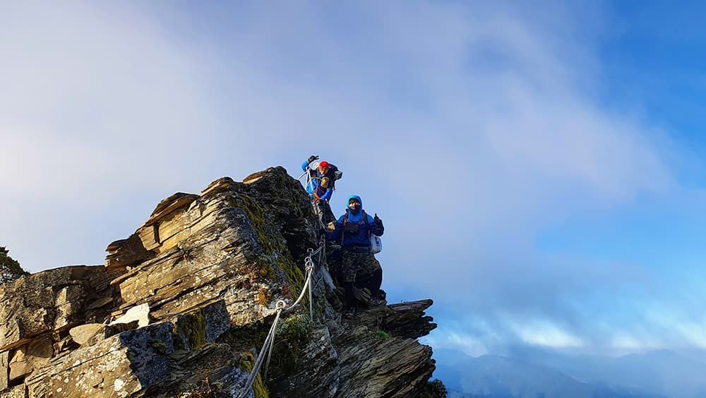
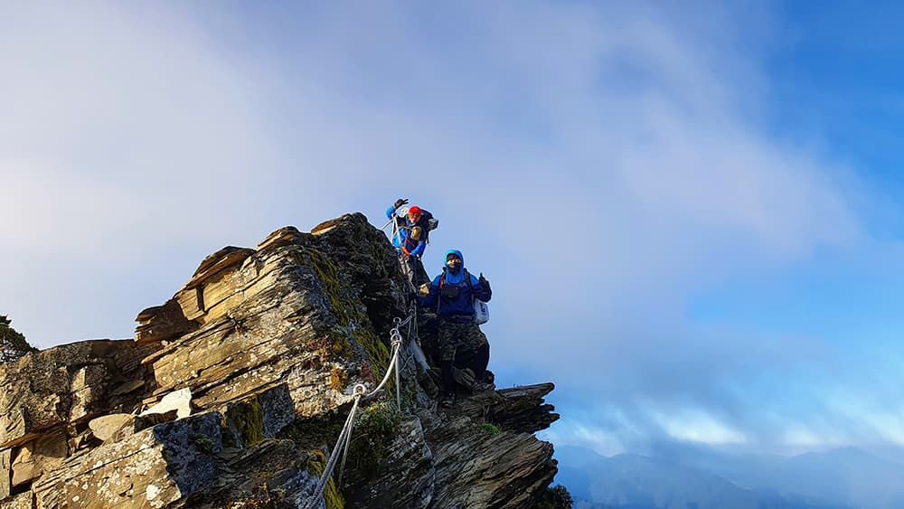

南湖北山
宜蘭縣南澳鄉
3,536m
2019.10.12
[D3]審馬陣山屋南湖北山五岩峰南湖大山北峰南湖圈谷南湖山屋
前情提要：
原本預計第二天抵達南湖山屋的我們，由於一些因素決定提前於審馬陣山屋歇腳，儘管後續行程多少受到影響，但爬山嘛，計畫趕不上變化也是常有的事。套句２０１５年經典山難電影《聖母峰》（Everest）裡的經典台詞──「山永遠都在那裡」，少爬一兩座也不會怎麼樣，不僅未來有的是機會，也可以是說服自己再次造訪同一條山路的藉口。

凌晨４：００，山裡的夜風冷得令人直打哆嗦，看著遠方山腳燈火通明，內心不禁產生「別人在溫暖的被窩裡睡大覺，為什麼我卻在這裡受苦受凍」的負面思緒。然而身處深山中的我們別無選擇，與其放棄行程下山之後感到懊悔，不如操著髒話繼續向前邁進，畢竟行前不知已看過多少山友分享的照片，未來親眼所見、親身所感的一切，絕對和「後悔」兩字扯不上關聯。
山形上的光點不是星空，而是山友額際上的頭燈。
時間５：３０，天幕掀起一抹魚白，我們來到南湖北山與南湖山屋交會的岔口，與審馬陣山一樣，南湖北山只需要十幾分鐘就能登頂。雖然打在臉上的寒風十分刺骨，但想起再不一會兒就能迎接人生第一道高山上的曙光，熾熱的心火正在體內熊熊燃燒著。

在白色自黑幕間暈染調和之後，上帝的水彩筆劃開的是一線朱紅。撇開飀飀強風不談，南湖北山的山徑十分清楚好走。


南湖北山，百岳編號２２，海拔３５３６公尺。看名字就知道祂和南湖東峰、南峰等同屬南湖大山山群，值得注意的是，南湖北山是灌溉蘭陽平原，為宜蘭縣最主要的河川──蘭陽溪的源頭。所以當你登上南湖北山時，可以看到標示山名及高度的木樁上，還多了一塊刻印著「蘭陽溪源頭」的石碣。

迎接從海平面底下逐漸升起的太陽，看來今天也是一個晴朗的早晨。
這幅畫面在腦海裡浮現的是某個電影公司的開場動畫。前方是人人聞之色變的五岩峰，祂們像是帶刀侍衛，守護著後方的帝王之山。
五岩峰，指的是左右兩側皆是萬丈深淵的五段斷崖峭壁，是通往南湖大山必須克服的關卡。除了地勢險峻之外，反覆陡上陡下也很考驗登山客的肌耐力。

幸好沿途繩索、鋼釘已架好架滿，危險性已降低不少。
五岩峰上多的是各種奇形怪狀的玉山圓柏，它們各自圈地盤據，各個蒼翠挺拔、古奇蒼勁，宛如由大自然宗師舉辦的木雕展。
 

因為「險」，所以信手一按快門就是一張張氣勢壯闊的影像。
７：００，平安通過五岩峰的考驗，來到南湖大山北峰稍作調息。南湖大山北峰，海拔３５９２公尺，祂和南湖北山是不同的兩座山，不少登山人常常會將這兩個相似的名字混淆。北峰與北山，前者隸屬南湖大山的北面山峰，後者則是獨立的高山百岳。
站在北峰上望向本體──南湖大山。儘管現在表達情緒還太早，但看著兩天前還是遙不可及的大山就在眼前，除了感動，還是感動。
距離南湖山屋已剩下不到一公里的路程，如果以為五岩峰已是最後一道考驗那可就大錯特錯了。
最後這一公里的路程是連綿的碎石坡，坡度頗為陡斜，我們幾乎是半走半滑地下到圈谷。圈谷地形是數萬年前冰河曾經造訪台灣留下的痕跡，在台灣，圈谷大多集中在雪山、南湖大山和玉山一帶。在南湖大山有兩處圈谷地形，分別以上圈谷與下圈谷稱之，而南湖山屋就位於下圈谷內。
遠遠投視就明顯可以看到下圈谷內的搭帳數量十分驚人，所謂的高山菜市場，指的便是此等盛況。
幾乎所有平坦的位置都已經搭起帳棚，我們尋尋覓覓許久，最後決定還是自己整地會更有效率。半夜摸黑出發、欣賞南湖北山日出、翻越五岩峰、滑下圈谷...感覺體驗了很多事，今天要結束了嗎？才不。運動錶上時間數字顯示「０８：３０」的字樣，正如同平日正準備出門上班一般，我們第三天的計畫才正要開始。